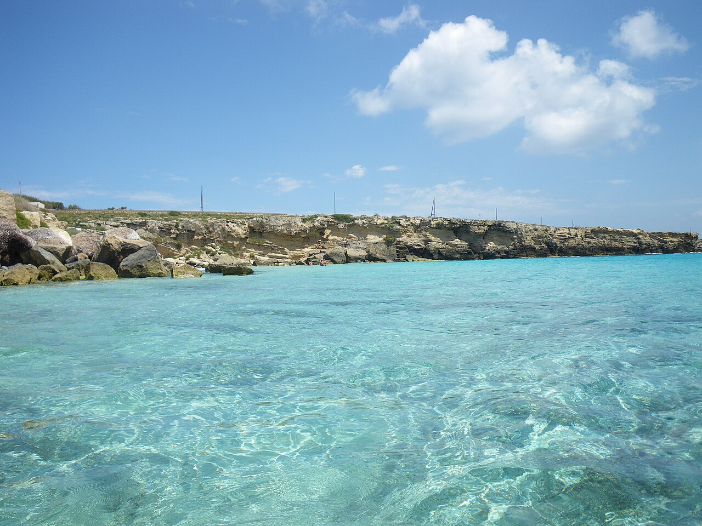
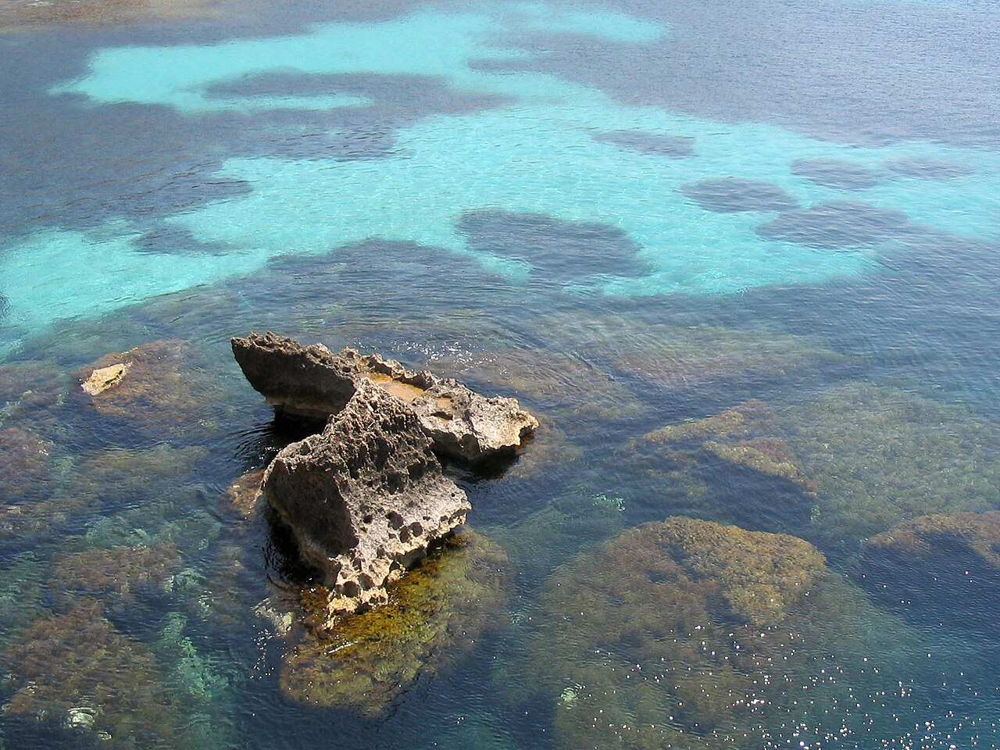
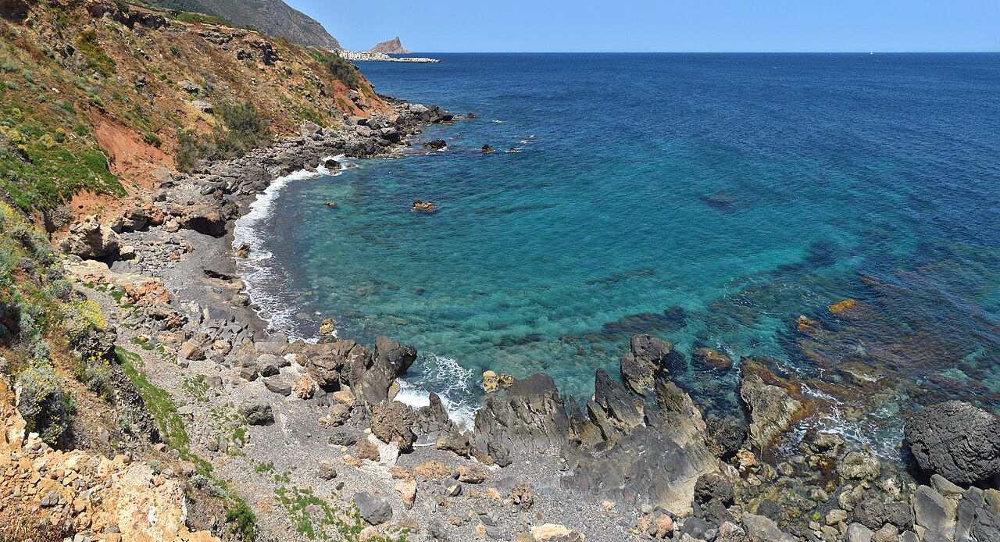
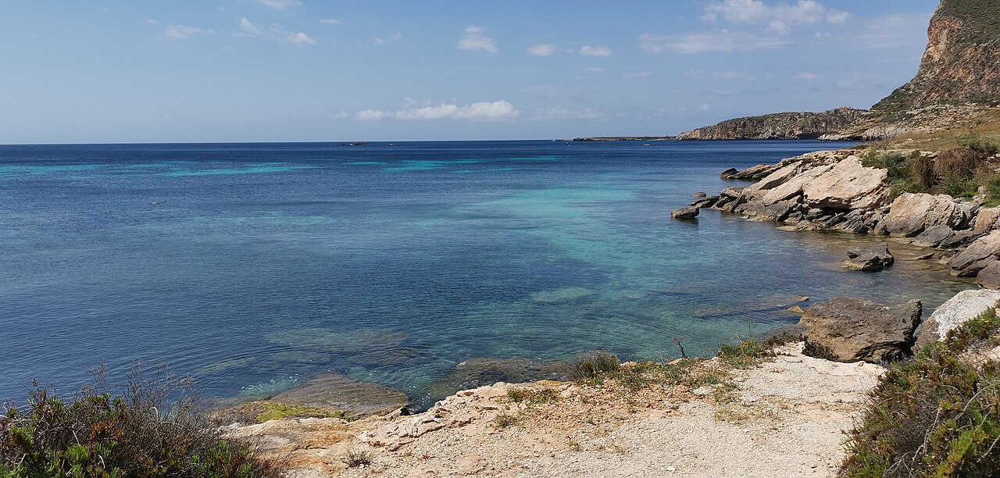

Passaggi tra amici verso l’aeroporto.
Marsala · Isole Egadi · 08—11.10.2026
Il mare non è
un programma fisso.
Quattro giorni di vela tra Levanzo, Marettimo e Favignana. Più barche, più equipaggi, una rotta che segue mare, vento e luce.

Rotta apertaMarsala
→ Egadi
→ Egadi
Il Passage Plan si aggiorna con il mare reale.
RitrovoPorto di Marsala
ImbarcoTutti a bordo · cambusa già pronta
PartenzaGiovedì 8 · ore 15:00
RientroDomenica 11 · Marsala entro le 18:00
Arrivi e partenze
Il viaggio
inizia prima.
Un passaggio verso l’aeroporto, un transfer per Marsala, qualcuno con cui condividere il ritorno.
Trapani o Palermo, con finestre compatibili.
Il contatto si condivide solo se lo scegli.
Passage plan
Una direzione,
molte possibilità.
Una traccia da immaginare, non una promessa di ancoraggio: ogni sera decide lo skipper, dopo aver letto il mare.
◌ Rada, porto o campo boe: prima la sicurezza, poi la cala.
Apri il briefing aggiornabile →

Giovedì · 08.10
Marsala
→ Levanzo
Tramonto e prima notte, se il mare lo permette.
Venerdì · 09.10
Levanzo
→ Marettimo
Una cala, la traversata e il porto del borgo.
Sabato · 10.10
Marettimo
→ Favignana
Costa, porto, cena collettiva e musica.Domenica · 11.10
Favignana
→ Marsala
Ultimo bagno, poi rientro in porto entro le 18:00.La mappa delle possibilità
Ogni isola ha più di un volto.
Levanzo
Il primo silenzio.
Cale appartate, luce morbida e una prima notte da scegliere con il mare.
Marettimo
La parte più remota.
Punta Troia, costa alta e un borgo che si accende la sera.
Favignana
Ultimo tuffo, prima del ritorno.
Acqua cristallina, cala scelta sul momento e ritorno con il sole basso.
Immagini adattate al formato del sito: Levanzo — Norbert Nagel (CC BY-SA 3.0); Marettimo — The Cosmonaut (CC BY-SA 2.5 CA); Favignana — Marcolbr23 (CC BY-SA 4.0) e René Bongard (CC BY-SA 3.0).
Più barche, una flotta
Ogni equipaggio
ha il suo skipper.
La flottiglia è pubblica; gli equipaggi restano indipendenti. Ogni skipper decide se mostrare anche i posti liberi.
Prima barca confermata
Karibu
Fountaine Pajot Isla 40
- 4 cabine doppie
- 2 posti in dinette
- Cabina marinaio a prua
Film in preparazione
Non un video
turistico. Un ricordo.
Tre frammenti verticali e un film orizzontale, costruiti soltanto con riprese originali e musica utilizzabile.
Capitolo 01
Verso Levanzo
Prua, vento, mani sulle cime e il sole che scende.
Capitolo 02
Il blu che cambia
Tuffi, fondali, silenzi e Marettimo all'orizzonte.
Capitolo 03
La sera è nostra
Favignana, tavola condivisa, musica e volti amici.
Siamo pronti a partire